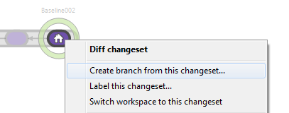
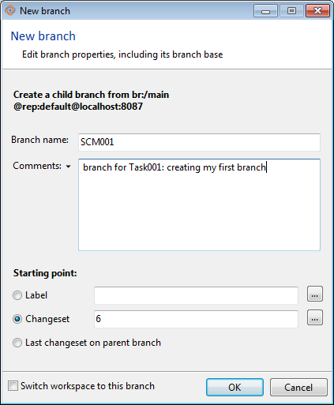

Let’s go to branch explorer. You will see something like the before figure. Remember the current changeset loaded in your branch it’s the one with a house on it. Right click on this changeset and click on “Create branch from this changeset” action as the figure below shows:

Figure 1: Creating a branch
Then the “create branch” dialog will show up. Enter “SCM001” for the branch name and enter a comments as the following figure shows:

Figure 2: New branch
There are dozens of ways to branch. Plastic team works with “Branch per Task”. Every development task is a new branch. At the bottom of the window, there is a check “Switch workspace to this branch”. You check out to start to development in the new branch.